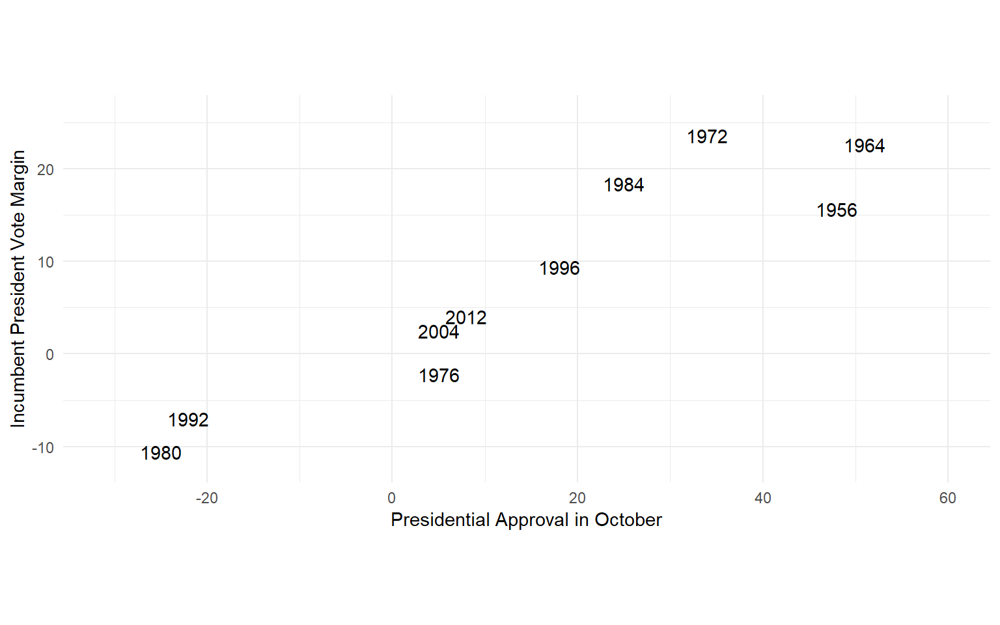
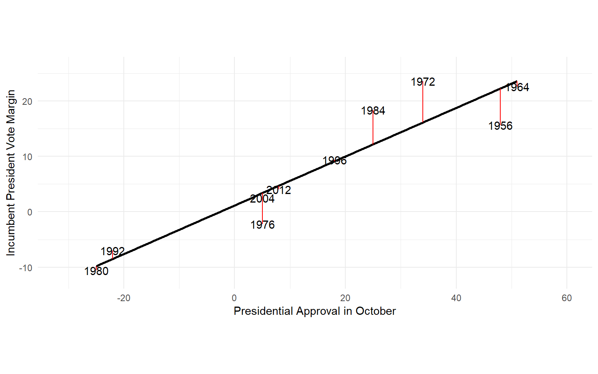
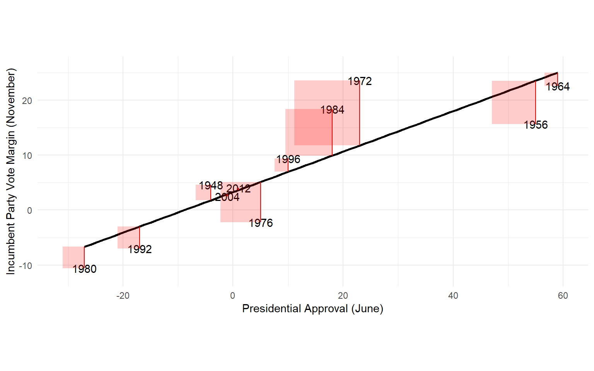
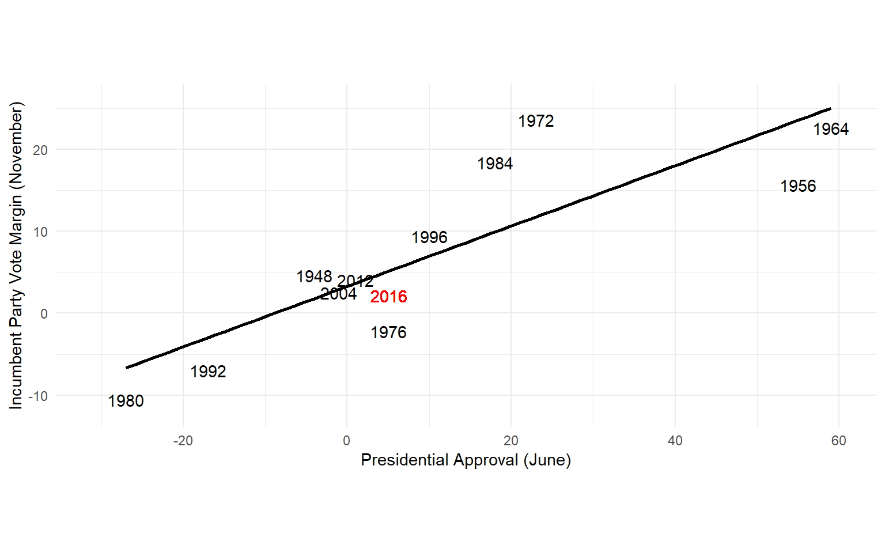
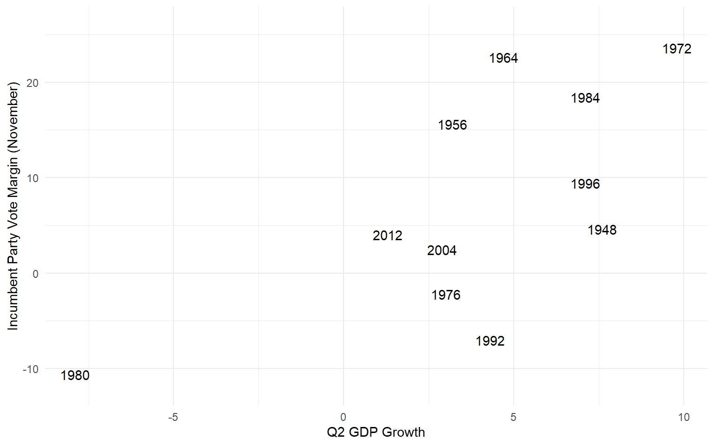
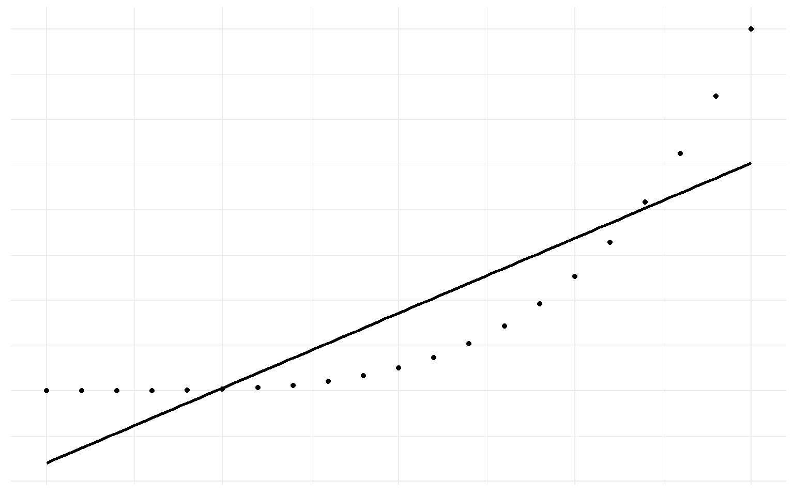
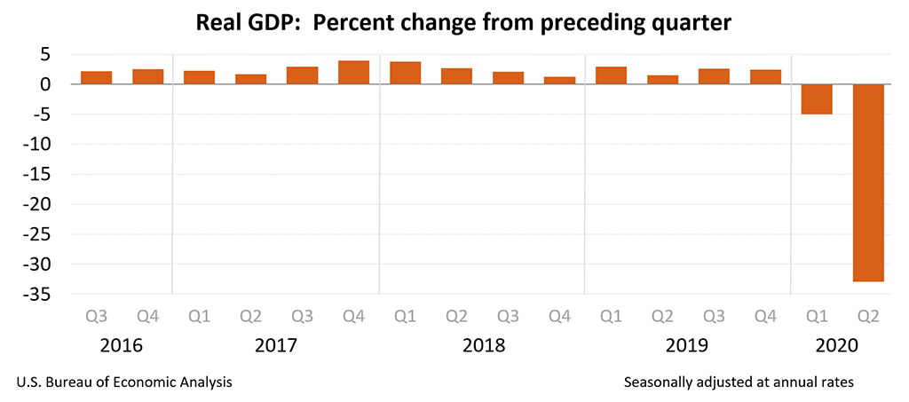

Linear Models
POLS 3220: How to Predict the Future
Road Map
In the first half of the semester, we learned the fundamentals of probabilistic forecasting.
We also showed how “crowds” of forecasters tend to outperform individuals.
Over the next three weeks, we’ll apply these insights to learn the basics of machine learning.
Machine Learning
The term machine learning refers to any computer algorithm that:
- identifies patterns in data, and
- uses those patterns to make predictions.
This is a really broad definition!
Machine Learning
Machine Learning
Machine Learning
Today’s Agenda
We’ll start with perhaps the simplest machine learning approach: the linear model.
Simple \(\neq\) bad!
- Simple models frequently outperform complicated models at prediction.
We’ll describe how linear models works, and discuss three potential dangers associated with using them.
Motivating Example
Suppose it is June in a presidential election year, and you want to predict which candidate will win.
Can you make a reasonably accurate prediction about November’s election based only on information you have in June?
Let’s start with an “Outside View”. Are there variables that, historically, have been predictive of presidential election results five months in advance?
Discuss: what information would you want to know before making your prediction?
Presidential Election Forecast
Presidential Election Forecast

Presidential Election Forecast
The equation describing that line is 3.27 + 0.37 \(\times \text{June Approval}\)
For every 1-unit increase in presidential approval, we would predict an additional 0.37 in vote margin for the incumbent’s party.
But where did those numbers come from? What is the “line of best fit”?
The line of best fit is the line that minimizes average squared error.
- Sound familiar?
Presidential Election Forecast
Presidential Election Forecast
Presidential Election Forecast
We can make predictions using this model by plugging in values for future elections.
In June 2016, the incumbent president’s net approval rating was +5%.
So the model would predict 3.27 + 0.37 \(\times 5 = 5.12\%\) vote margin for the incumbent party.
Presidential Election Forecast
Presidential Election Forecast
The average forecast error is 4.7 percentage points.
And we have some particularly large errors in 1972 (11.9 points) and 1984 (8.5 points).
Maybe we’d do better if we added more predictor variables to the model?
Presidential Election Forecast
Presidential Election Forecast
Combining the presidential approval and economic growth into the same linear model yields this equation:
- 0.33 + 0.3 \(\times \text{June Approval}\) + 0.94 \(\times \text{Q2 GDP Growth}\)
In 2016, GDP growth was a sluggish 1.2% in the second quarter.
So the revised model would predict an incumbent margin of 2.96 percentage points. Much better!
The “Plane of Best Fit”
Presidential Election Forecast
The kind of forecast model we’ve been building here is called a fundamentals model.
Notice that it doesn’t use polling at all!
It makes predictions purely based on “fundamentals”, historical patterns in the data (Abramowitz 2021) .
In a future lecture, we’ll show how combining polls + fundamentals yields better predictions than either alone.
Three Dangers
Simple linear models can be a surprisingly useful tool for making predictions.
But when using a linear model, keep in mind three dangers that could ruin your forecasts:
Nonlinearity
Extrapolation
Structural Stability
Danger 1: Nonlinearity
The linear model faithfully gives you the line of best fit…

…even when a straight line is a terrible model!
- Diagnostic: are there patterns in the errors?
Danger 2: Extrapolation
- Be cautious of making predictions with a linear model if the current situation lies far outside the historical data.

- Plugging these numbers into our model would predict the incumbent losing by 35.2 percentage points! (Actual margin was -4.5 points).
Danger 3: Structural Stability
Predicting with a linear model assumes that the relationships observed in your data will be stable over time.
In other words, you’re assuming that the future will follow the same rules as the past.
Maybe as voters have become more polarized, the relationship between economic growth and voting behavior has gotten weaker?
- If so, our fundamentals model will get worse and worse at predicting.
This is closely related to a problem we’ll discuss in more detail next lecture: overfitting.
Looking Forward
Next time, I’ll show you a slightly more complex machine learning approach that’s better at handling nonlinearity: classification and regression trees (CART).
We’ll discuss the balance between overfitting and underfitting machine learning models, and how it relates to the bias-variance tradeoff we introduced previously.
References
Abramowitz, Alan I. 2021. “It’s the Pandemic, Stupid! A Simplified Model for Forecasting the 2020 Presidential Election.” PS: Political Science & Politics 54 (1): 52–54. https://doi.org/10.1017/S1049096520001389.